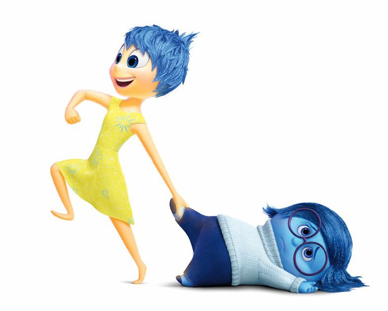

Why theraPY?
- Music Therapy is one of the latest and impactful methodology for treating mental disorders and issues. Our Bodies react to music naturally and recently it's trending again in research for treating neurological patients. One of the method is Guided Imagery and music (GIM) whixh uses images and music together for treating disorders like depression , post traumatic disorders , parkinson's and alzheimer upto some extent!.
- Eyes and Music: Our eyes are one of the most responsive organs of our anatomy. The can state the current state of mind involuntarily. There has been a lot of research conducted in this field and relation of the dilations in the pupil/iris have been deduced in various papers.